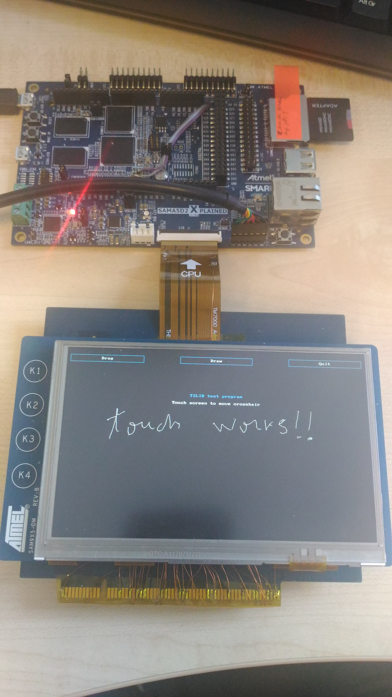

Using the SAMA5D2-compatible Resistive Touchscreen
The SAMA5D2 SoC has the support for Resistive Touchscreen. This feature is embedded in the ADC device.
This cannot be used on the
SAMA5D2 Xplained board out of the box. Some changes are required in order to test on this board, or, another board needs to be devised.
Here is a list of the required changes:
- Move the PMIC on another i2c bus, because the pins used for the current i2c bus of the PMIC need to be used for the resistive touch connector.
- Populate R36-R39
Another modified board is required to adapt the resistive touchscreen SAM9X5-DM to a ribbon cable that can be connected to the LCD port of the
SAMA5D2 Xplained .
Software setup
With the modified hardware, resistive touchscreen can be enabled using an
overlay provided in the at91 overlay tree
. This needs to be loaded at boot time.
The resistive touchscreen uses the new Generic Resistive Touchscreen (GRTS) from the Kernel, which is linked to the adc-cells of the ADC device.
The GRTS driver registers a new input device, and receives the data through the X, Y, and PRESSURE channels from the ADC device, and reports them to the input subsystem.
Overlay information
The
at91 overlay tree provides a special FIT configuration image, named sama5d2_xplained_grts.its which includes this overlay in the configuration.
To build this FIT image, instead of using sama5d2_xplained.itb as a target, use sama5d2_xplained_grts.itb
make DTC=<path> KERNEL_DIR=<path> KERNEL_BUILD_DIR=<path> sama5d2_xplained_grts.itb
Use the sama5d2_xplained_grts.itb to boot the kernel, altering the U-boot bootm command as follows:
bootm 0x24000000#kernel_dtb#grts
For more information about how to use U-boot to boot a FIT image for the kernel and Device Tree overlays,
see the specific page.
 Tips:
Tips: The
TSlib touchscreen library is required to calibrate the touchscreen before it can be used. We recommend running ts_calibrate to calibrate it and ts_test to try it out.
Picture of the setup

{kind=link}
{kind=link}